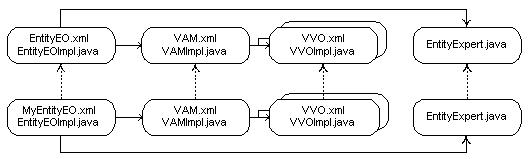

设计模型对象
客户／服务代码分离
在OA Framework的MVC框架中，OA Framework划出了客户端和服务端类的清析界限，典型的JSP应用有3个物理层
-
浏览器
-
web应用服务（中间层包含UI web bean结构和应用业务逻辑）
-
数据库服务器
在中间层OA Framework对“客户端”和“服务端”类划出了界限：
-
客户端类（视图类和控制器代码）驱动HTML用户界面。
-
服务端类（模型代码）支持任何客户端（不只是OA Framework）用户界面。
这个区别是非常重要的，它保证了从不同客户端访问服务代码的能力。
OA Framework“洋葱形”的代码层次边界：

通常可以在这些边界征用，对象引用下层的数据流，而不会引用上层的。
-
模型代码不应该直接引用控制器代码。
-
不要在客户端引用或导入任何服务端的实现类或接口（位于oracle.apps.fnd.framework.server包中的类和接口）
-
如果需要服务端代码执行一些操作，应该一直通过使用根应用模块接口（oracle.apps.fnd.framework.OAApplicationModule）调用根应用模块的通用远程方法调用invokeMethod()方法，或者为你的应用模块创建一个接口，以便于在编译时检查方法的调用。应用模块可以代理或实现所需要的逻辑。
注意： OAApplicationModule接口位于oracle.apps.fnd.framework包中，所有位于这个包中的类、接口、异常都可以在客户端和服务端代码中使用
如果选择为你的应用模块创建接口而不是使用invokeMethod()方法，应该在应用模块所在包的直接上级包中创建。比如，为oracle.apps.fnd.framework.toolbox.labsolution.server.EmployeeAMImpl所创建的接口EmployeeAM应该位于oracle.apps.fnd.framework.toolbox.labsolution包中。
- 永远不要直接在客户端代码中包含JDBC或其它服务端处理的代码。如果UI客户端需要服务端的信息，它应该通过应用模块，由应用模块代理或实现适当的响应。
保持编码规范一致
阅读下面的文章：
-
Oracle Application Java Coding Standards
-
Oracle Framework Nameing/File/Package/Directory Structure Standards
-
Oracle Framework Model Coding Standards
推荐的构建方法
编写OA Framework应用模块时，按下面的流程编写会简单一些。
-
创建BC4J模型对象所需要的业务组件包。
-
实现公布的BC4J应用模块，实体对象，实体关联对象和页面所需要的视图对象和视图链接义。将视图对象添加到根应用模块中。这一步不要担心编写代码。
-
创建应用的菜单定义。
-
为页面创建OA用户界面组件。
-
创建和实现控制器代码。
-
为页面实现UI应用模块代码。
-
实现实体对象业务逻辑。
业务组件包
包有BC4J模型组件必须属于业务组件包（Business Components(BC4J)）。
如果要修改已经存在的BC4J包使用的数据库连接，可以如下操作：
-
选择OA Project中的业务组件包。
-
右键，选择Edit Business Components Project。
-
在Business Componets Project Wizard中，选择Connection。
-
指定新的数据库。
-
选择OK保存修改。
实体对象
实体对象为指定的表、视图或同义词实现业务规则。实体对象被确定为用于多种客户端，应该处理与表相关的校验和行为。
-
每个表应该只有至多一个实体。
-
实体对象应该在它的属性中包含表中的所有列。
-
可以创建自己的公用实体对象。
-
通常需要为实体添加对象初始化，属性校验，实体级的验证和其它功能性的行为。
-
也可以在综合性的业务对旬中创建"entity expert"的单例对象用于在多个相关实体对象间共享。比如，定购单有定单头、定单行和销售信息。其它相引用的实体可以使用entity expert来执行轻量的校验（比如，定单可能需要使用供应商的entity expert检查自己所使用供应商id是否有效）。
-
最后，你可以根据需要为模型代码创建"helper"对象和接口。比如，在OA Framework的ToolBox教程中，你可以创建一个或多个helper对象在多种实体对象上执行处理。
实体关联（关联对象）
关联可以创建实体之间的关系。在运行时，BC4J使用这些关系来协调相关的对象。有两种基本类型的关联：
-
聚合 这是强关联，源实体对象拥有目标实体对象。也就是说，目标不能离开源对象独立存在。比如，定单头由多个行组成，离开它们的头信息后就没有含义了。
-
引用 这是弱关联，源对象只引用目标实体。比如，定单引用供应商，但供应商在没有被定单引用的时候仍然可以存在。
聚合关系适合于在运行时创建、初始化和管理。BC4J自动将聚合作为一个逻辑单元。比如，定单对象将在修改它的条目时被锁定。
引用关系适合于在运行时候修改、引用。比如，在定单和供应商之间建立关联，如果在编辑定单时可以修改供应商，并不需在供应商和货品条目间建立关联。
编程控制
关联对象没有代码，并不需要为它们编写代码。
视图对象和视图行
视图对象包含了数据库查询，通过它可以访问相关的实体对象。关于视图对象的设计的重要决策就是它是应该基于SQL还是实体对象。
-
所有锁碎的UI视图对象，比如Lists of Values (LOV)和poplists等基于SQL。
-
所有验证性的视图对象，用于为实体对象实现简单业务规则的基于SQL。
-
为UI创建的视图对象，不管它们是否可以更新，应该基于实体对象。
基于性能的原因，视图对象需要被优化。在一些UI组件中，创建多个小型的处理特定任务的视图对象优于共同一个单一的大型的视图对象。视图对象应该是为UI而定制的。
只要可能就应该避免使用动态WHERE子句（视图对象支持用编程的方式修改它的定义）。如果可能，为相同的SELECT定义3个不同的视图对象，每个带一个WHERE子句，用于在运行时绑定。但是，在复杂查询时修改WHERE子句是合适的，因为不可能为所有可能的查询定义独立的视图对象。
视图对象，与任何BC4J对象一样，可以用申明的方式或编程的方式创建。基于性能的原因，如果可以的话通过申明的方式定义视图对象。
所有视图对象都是oracle.apps.fnd.framework.server.OAViewObjectImpl的子类。
视图对象有SQL视图对象，实体视图对象和混合视图对象。
主键
几个所有视图对象都需要主键。可以在定义属性时指定主键，或者通过编程的方式调用OAViewObjectImpl类的setKeyAttributeDefs()方法设置主键。
编程控制
查询处理
每个视图对象都实现了查询，如果需要，它应该能够翻译传递进来的参数，并将它绑定到WHERE子名中的变量上。在编码上通常处理这个工作的方法被命名为initQuery()或其它类似initNameEmployeesQuery()之类的“init”方法上。
注意： 必须使用Oracle风格的参数绑定方式（FOO >= :1）而不是ANSI风格的（FOO >=?）。尽管代码只复杂一点点，OA Framework团队计划在Fusion版本中不支持ANSI风格的绑定。
下面是修改WHERE子名和绑定查询条件的例子：
// Initialize and execute the querypublic void initQuery(String name, String onHold, String number){ StringBuffer whereClause = new StringBuffer(100); Vector parameters = new Vector(3); int clauseCount = 0; int bindCount = 0; setWhereClauseParams(null); // Always reset
if ((name != null) && (!("".equals(name.trim()))))
{
whereClause.append(" NAME like :");
whereClause.append(++bindCount);
parameters.addElement(name + "%");
clauseCount++;
}
if ((number != null) && (!(""Equals(number.trim()))))
{
Number supplierId = null;
// SUPPLIER_ID is a NUMBER; datatypes should always
// match, and the parameter passed to this method is a
// String.
try
{
supplierId = new Number(number);
}
catch(Exception e) {}
if (clauseCount > 0)
{
whereClause.append(" AND ");
}
whereClause.append(" SUPPLIER_ID = :");
whereClause.append(++bindCount);
parameters.addElement(supplierId);
clauseCount++;
}
if ((onHold != null) && (!(""Equals(onHold.trim()))))
{
if (clauseCount > 0)
{
whereClause.append(" AND ");
}
whereClause.append(" ON_HOLD_FLAG = :");
whereClause.append(++bindCount);
parameters.addElement("Y");
clauseCount++;
}
setWhereClause(whereClause.toString());
if (bindCount > 0)
{
Object[] params = new Object[bindCount];
// the copyInto() is 1.1.8 compliant which, as of 4/02/03, is required by ARU
parameters.copyInto(params);
setWhereClauseParams(params);
}
executeQuery();
} // end initQuery( )
业务逻辑
视图对象不适合放置业务逻辑；不应该在视图对象或视图行对象编写校验规则。
视图行
尽管应该总是创建视图行对象，但很大程度上，你不需要编写视图行代码。视图行代码用于需要计算临时属性的的情况下。比如，你不能或不希望在查询中包含逻辑（可能性能开销太大）。你可以使用视图行代码执行简单的校验或添加用于UI的临时性变量，或者调用实体对象的自定义方法。
自定义视图行方法不能直接从客户端访问。客户端必须先在应用模块中调用一个方法，由它将任务委派给视图对象。由视图对象来访问视图行。此外，对于有视图行类的应该使用生成的setter/getter方法。因为它比调用通用的setAttribute("
视图链接
与上面描述过的实体关联类似。视图链接定义了两个视图间的关系，通过它BC4J能自动从当前的源视图对象查询到相对应的目标视图对象。
视图链接可以基于关联对象或者申明两个视图对象间的join链接。比如，两个表有基于外键的主从关系。相应的实体对象通过关联对象关联，基于这两个实体的视图对象可以通过基于关联对象的视图链接相关联。
尽管视图链接可以非常方便，但在web应用页面上应该保守的使用。因为它缓存了主表和从表的记录，当用户从一个主表记录移到另一个主表记录时，这个开销可能相当大。使用视图链接通常只在下面的情况：
-
当特定的beans（比如HGrid）需要。
-
当你有一个可更新的主／从视图对象（在同一个页面或不同的页面），这们下面的实体对象是使用 聚合 关联的， 你必须在他们之间定义视图链接。
-
当你在同一个页面上有一个只读的主／从视图对象时，导航到一个主记录行的时候将导致自动查询子对象。
编程控制
由于视图链接没有实现类，所以不需要编写代码。
但可以使用oracle.jbo.ApplicationModule.createViewLinkBetweenViewObjects动态创建视图对象。
注意： 编程方式产生的视图链接中的主／从视图对象必须属于同一个应用模块实例。
应用模块
这里介绍的是应用模块创建／重用的基础。
应用模块使用
下面列出来在应用中的应用模块的承担的角色：
-
UI根应用模块（UI Root Application Module）为一个或多个相关的UI页面建立事务环境。每个页面有一个根应用模块它可以包含任何视图对象或这个页面使用的嵌套应用模块。
-
UI共同区域应用模块（UI Shared Region Application Module）任何用于在多个页面使用的UI区域（region）应该包含自己的应用模块。当这个区域在页面中使用时，OA Framework自动嵌套于页面的根应用模块之下。
-
UI List of Values Application Module这是前一个角色中的一种特殊情况。当创建List of Values (LOV)视图对象时，你将这些组件添加到一个应用模块中用于获取LOV集合。
-
验证应用模块（Validation Application Module）校验应用模块聚集相关视图，执行轻量级的SQL校验。实体对象或experts使用校验应用模块，它与用户界面无关。
应用模块是oracle.apps.fnd.framework.server.OAApplicationModuleImpl的子类。
重要： 如果你没有完全实现和保证页面的钝化支持，就不要设置应用模块的Retention Level为MANAGE_STATE。
可以在应用模块属性的Peoperties页，创建一个属性，属性名为RETENTION_LEVEL，属性值为MANAGE_STATE。
生成应用模块接口
产生应用模块接口可以便于编译时检查，而不用使用invokeMethod()来调用，可以在应用模块编译页面，选择Client Methods启用invoke remotely选择好Available list。
编程控制
不要将数据校验等业务逻辑放在应用模块中；这些应该放在下层的实体中。应用模块适合放下面的逻辑：
-
访问任何BC4J相关的对象。
-
执行多种服务端动作，或者跨多个视图对象的单个事件或方法调用。
-
从服务端返回客户端从OAPageContext访问不到的值。
-
调用特殊的PL/SQL程序。
-
技巧： 如果PL/SQL程序是用于处理单行（或行的集合）时你应该使用基于PL/SQL的实体对象。
方法命名
任何直接用于UI支持的应用模块中的方法应该命名为相应的UI "events"。比如，如果用户按了Create按钮，应用模块方法应该被命名为"create"。
实体对象创建
下列描述了应用模块方法创建新插入一行到SuppliersVO视图对象。这个视图对象是基于SupplierEOImpl实体对象的，因此BC4J在行被创建时在幕后处理这些。
public void createSupplier()
{
OAViewObject vo = getSuppliersVO();
Row row = vo.createRow();
vo.insertRow();
// As specified in OA Framework Model Coding Standards, // set the new row state to STATUS_INITIALIZED.
row.setNewRowState(Row.STATUS_INITIALIZED);
}
视图对象查询
下面显示了一个应用应用模块方法查询SuppliersVO视图对象，用于搜索客户端设置的条件。
public void query(String supplierName, String onHoldFlag, String supplierNumber)
{
SuppliersExpVOImpl vo = getSuppliersExpVO();
if (vo == null)
{
MessageToken[] tokens = { new MessageToken("OBJECT_NAME", "SuppliersExpVO")};
throw new OAException("ICX", "FWK_TBX_OBJECT_NOT_FOUND", tokens);
}
vo.initQuery(supplierName, onHoldFlag, supplierNumber);
} // end query()
下面的例子显示了当用户导航到页面上时初始中化页面。
public void init(String status)
{
PoSimpleSummaryVOImpl vo = getPoSimpleSummaryVO();
if (vo == null)
{
MessageToken[] tokens = { new MessageToken("OBJECT_NAME", "PoSimpleSummaryVO")};
throw new OAException("ICX", "FWK_TBX_OBJECT_NOT_FOUND",tokens);
}
// Follows Back Button standard of never performing a blind query without
// checking to see if this is necessary.
if (!vo.isPreparedForExecution())
{
vo.initQuery(status);
}
} // end init()
实体删除
/**
* Deletes a purchase order from the PoSimpleSummaryVO using the
* poHeaderId parameter.
*/
public void delete(String poHeaderId)
{
// First, we need to find the selected purchase order in our VO.
// When we find it, we call remove( ) on the row which in turn
// calls remove on the associated PurchaseOrderHeaderEOImpl object.
int poToDelete = Integer.parseInt(poHeaderId);
OAViewObject vo = getPoSimpleSummaryVO();
PoSimpleSummaryVORowImpl row = null;
// This tells us the number of rows that have been fetched in the
// row set, and will not pull additional rows in like some of the
// other "get count" methods.
int fetchedRowCount = vo.getFetchedRowCount();
// We use a separate iterator -- even though we could step through the
// rows without it -- because we don't want to affect row currency.
// Note that there are also convenience methods for finding matching rows
// in a view object (see javadoc).
RowSetIterator deleteIter = vo.createRowSetIterator("deleteIter");
if (fetchedRowCount > 0)
{
deleteIter.setRangeStart(0);
deleteIter.setRangeSize(fetchedRowCount);
for (int i = 0; i < fetchedRowCount; i++)
{
row = (PoSimpleSummaryVORowImpl)deleteIter.getRowAtRangeIndex(i);
// For performance reasons, we generate ViewRowImpls for all
// View Objects. When we need to obtain an attribute value,
// we use the named accessors instead of a generic String lookup.
// Number primaryKey = (Number)row.getAttribute("HeaderId");
Number primaryKey = row.getHeaderId();
if (primaryKey.compareTo(poToDelete) == 0)
{
row.remove();
getTransaction().commit();
break; // only one possible selected row in this case
}
}
}
deleteIter.closeRowSetIterator();
} // end deletePurchaseOrder()
自定义的动作"Approve"
这里描述了如何查找到视图对象的行并调用自定义的实体事件。
/**
* Steps through the POSimpleSummaryVO to look for selected rows. For
* each selected row, this calls the approve( ) method on the
* PurchaseOrderHeaderEOImpl class.
*/
public void approvePurchaseOrders( )
{
// To call a custom method on an Entity Object you should add a wrapper
// in the VO's *RowImpl class (see
// oracle.apps.fnd.framework.toolbox.schema.server.PoSimpleSumaryVORowImpl).
OAViewObject vo = getPoSimpleSummaryVO();
PoSimpleSummaryVORowImpl row = null;
int matches = 0;
// This tells us the number of rows that have been fetched in the
// row set, and will not pull additional rows in like some of the
// other "get count" methods.
// Note that there are also convenience methods for finding matching rows
// in a view object (see javadoc).
int fetchedRowCount = vo.getFetchedRowCount();
// We use a separate iterator -- even though we could step through the
// rows without it -- because we don't want to affect row currency.
RowSetIterator approveIter = vo.createRowSetIterator("approveIter");
if (fetchedRowCount > 0)
{
approveIter.setRangeStart(0);
approveIter.setRangeSize(fetchedRowCount);
for (int i = 0; i < fetchedRowCount; i++)
{
// For every row with a selected checkbox, we want call
// the approve( ) wrapper on the POSimpleSummaryVORowImpl which
// in turn calls the approve ) method on the PurchaseOrderHeaderEOImpl.
row = (PoSimpleSummaryVORowImpl)approveIter.getRowAtRangeIndex(i);
// For performance reasons, we generate ViewRowImpls for all
// View Objects. When we need to obtain an attribute value,
// we use the named accessors instead of a generic String lookup.
// String selectFlag = (String)row.getAttribute("SelectFlag");
String selectFlag = row.getSelectFlag();
if ("Y"Equals(selectFlag))
{
row.approve( );
matches++;
}
}
}
approveIter.closeRowSetIterator();
// If the user didn't actually select any rows, display an error message.
if (matches > 0)
{
getTransaction().commit();
}
else
{
throw new OAException("ICX", "FWK_TBX_T_SELECT_FOR_APPROVE");
}
} // end approve()
提交
Commit Example /**
* Provides a "commit" wrapper so UI controller code doesn't need to
* get a handle to the transaction itself which is a violation of the
* client/sever tier separation rules.
*/
public void apply()
{
getTransaction().commit();
} // end apply()
测试应用模块
在应用模块中添加完视图对象后，可以使用Business Component Browser（BC4J Tester）在为它们构建UI前执行视图对象，或者编写代码支持BC4J对象。
Entity Objects, Entity Experts, 'Validation' Application Modules and 'Validation' View Objects
这节介绍这些对象在一个应用中所扮演的角色。
Validation View Objectc
在实体对象中实现业务逻辑时，经常会发现需要执行一些简单的SQL语句，而不是纯校验目的。在执行这种SQL之前，你可以使用SQL语句动态创建一个视图对象，或者先定义一个视图对象。
实现
从实现的角度来看，Validation View object与正规的view object没有区别；这们的主要区别是在使用上。
Validation Application Modules(VAMs)
预先定义的视图对象必须被赋给应用模块以便在运行时被访问。也就是说，视图对象不能存在于应用模块环境之外。
由于实体对象（和他们的关联校验视图对象）可以被多个UI客户端（根应用模块可以当作客户端）共享，它不适合为具体的页面包含视图校验功能。将这些有用的视图对象进行分组，便于重用，并为每个业务逻辑对象创建一个validation application module包含它们。业务对象可以是实体对象聚合的顶级定义，或者是一个单独的实体对象。比如OA Framework ToolBox教程中定单由3个实体组成，但PurchaseOrderHeaderEOImpl类描绘出了定单业务对象。
比如，在OA Framework ToolBox教程中，我们创建了业务对象级的校验应用模块PurchaseOrderVAM并将所有定单校验视图对象添加给了它。
实现
从实现的角度来看，validation application对象与正规的应用对象没有区别；只是使用方式的不同。创建validation application module并把相关的validation view objects关联给它。
Entity Experts
entity expert被定义为一个单例对象，是业务对象一个特殊的分支（聚合中的顶级实体对象，或一个单独的实体对象）。它包含有能被拥有它的业务对象调用，或者被其它业务对象调用的简单校验例程。比如，PurchaseOrderHeaderEOImpl类不需要整个SupplierEOImpl类，只需要查找出外键supplierId是否有效。因此，它调用了supplier的entity expert单例对象的isSupplierIdValue(Number supplierId)方法，这是一个更加轻量级的操作。
实现
创建entity expert，先创建一个oracle.apps.fnd.framework.server.OAEntityExpert的子类。然后将它关联到一个实体对象上。
注意： 对于聚合类的业务对象，将expert关联到顶级的对象上。否则关联到单独的实体对象。
重用业务对象
Entity Objects, Associations, Validation AMs, Validation VOs, Entity Experts
如果希望创建可重用的Entity Objects,Associations,Validation AMs,Validation VOs,Entity Experts，应该知道下面的规则：
-
下层数据库方案的拥有者，拥有对应的Entity Objects,Associations,Validation Application Modules,Validation View Objects,和Entity Experts。
-
拥有业务对象的产品团队必须编写并发布相应的文档供其它产品团队重用。
-
当你创建包括你的EO和另一个产品团队的OtherBaseEO的关联对象时，在创建关联前，你必须继承OtherBaseEO到你的产品空间中(OtherExtendedEO)，并将关联建立在EO和OtherExtendedEO之间。
-
另一个产品团队使用你拥有的业务对象时应该要继承你提供的校验。那种情况下，消费产品团队应该继承Entity Object,Validation Application Module,Validation View Object和Entity Expert and包括扩展的自定义代码。继承校验方法时，确保在继承的校验方法的开始位置调用了super()。
扩展业务对象
下表描述了创建业务对象和关联到需要扩展的校验时要的相关对象。

第一行列举了定义实体时所有可能创建的对象。第一个格子说明了创建一个实体对象时将产生两个文件：元数据定义的XML文件，和实际的Java实现类文件。实体对象处理属性级和记录级的校验。这些校验通常需要使用Validation View Objects (VVO)。校验对象在Validation Application Module(VAM)中分组。与实体对象类似，创建VVO和VAM产生了元数据定义XMl文件，并为每个对象产生了Java实现类文件。最后，实体对象有时会接收辅助类提供的一些服务，为实体对象提供的验证服务。辅助类是Entity Expert通过实体对象的属性连接到实体对象。
上图描述了所有业务对象继承时的情况。虽然并不总是这样。多数情况下，将对继承的结果满意。注意，不应该修改蕨类的定义或复制基类。应该使用继承。
未完！！！！！
Comments